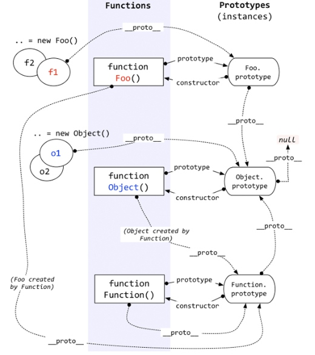

JavaScript的所有数据都可以看成对象，这就意味着也可以使用面向对象编程。
但是JavaScript的面向对象编程和大多数其他语言如Java、C#的面向对象编程都不太一样，JavaScript不区分类和实例的概念，而是通过原型（prototype）来实现面向对象编程。
创建对象
类的创建也比较简单，一共有三种方式
-
通过字面量{ … }
var Student = { name: 'Robot', height: 1.2, run: function () { console.log(this.name + ' is running...'); } }; Student.run(); -
通过构造函数
除了直接用{ … }创建一个对象外，JavaScript还可以用一种构造函数的方法来创建对象。它的用法是，先定义一个构造函数，通过new构造函数可以创建一个类
function Student(name) { this.name = name; this.hello = function () { alert('Hello, ' + this.name + '!'); } } var xiaoming = new Student('小明'); xiaoming.name; xiaoming.hello(); -
使用class关键字
新的关键字class从ES6开始正式被引入到JavaScript中。class的目的就是让定义类和继承类更简单。
class Student { constructor(name) { this.name = name; } hello() { alert('Hello, ' + this.name + '!'); } } var xiaoming = new Student('小明'); xiaoming.name; xiaoming.hello();
prototype与proto的理解
在JS里，万物皆对象。方法（Function）是对象，方法的原型(Function.prototype)是对象。同时它们都会有一个__proto__属性，称为隐式原型
一个对象的隐式原型指向构造该对象的构造函数的原型，这也保证了实例能够访问在构造函数原型中定义的属性和方法。
var a = {name:1}
a.__proto__指向Object
而Object正是构成a的函数（function Object(){}）的原型，
同时Object的constructor指向（function Object(){}）
所以自定义的对象是由其他自定义对象继承而来，或者直接由一个Object拓展而来，不管怎样同时往上找必有一对Object和function Object(){}
var b = {name:2}
var a = {name:1}
a.__proto__=b;
往上找
a//{name=1}
a.__proto__//{name=2}
a.__proto__.__proto__//Object
a.__proto__.__proto__.__proto__//null
综上，我们也可以自己定义那么一对Object和function Object(){}。通过自定义函数，同时通过new的方式来产生自己想要的自定义对象
为了实现这样的需求，js中方法还有自己特有的属性——原型属性（prototype）这个属性是一个指针，指向一个对象（刚好一对，默认prototype指向一个Object，Object的constructor指向函数），这个对象的用途就是包含所有实例共享的属性和方法（我们把这个对象叫做原型对象）
function b(){this.name=1}//构造函数
var bb = new b();
首先把b里面所有的this内容绑定（可以理解为移动）到bb中
b的prototype指向一个默认的Object
然后bb的__proto__指向这个Object
Object的constructor指向b
或者更复杂一些
var a = {name:2}
function b(){this.name=1}//构造函数
b.prototype = a;
var bb = new b();
首先把b里面所有的this内容绑定（移动）到bb中
然后设置了b.prototype = a，所以把bb的__proto__指向a
bb//{name:1}
bb.__proto__//{name:2}
bb.__proto__==a//true
bb里面并没有bb.constructor
bb.constructor时他会往上找，bb.__proto__<==>a，a的proto里面有
所以bb.constructor<==>a.__proto__.constructor

继承
在传统的基于Class的语言如Java、C++中，继承的本质是扩展一个已有的Class，并生成新的Subclass。
由于这类语言严格区分类和实例，继承实际上是类型的扩展。 但是，JavaScript由于采用原型继承，我们无法直接扩展一个Class，因为根本不存在Class这种类型。 在JavaScript中所谓继承关系不过是把一个对象的原型指向另一个对象而已。
理解了prototype与proto创建继承就很简单了
下面是创建原型继承的最简单的一种方法
var Student = {
name: 'Robot',
height: 1.2,
run: function () {
console.log(this.name + ' is running...');
}
};
//等价为var xx = {},xx.name="xm"
//xxxx.__proto__=Student
//不推荐这样做，按照下面的方法做
function createStudent(name) {
// 基于Student原型创建一个新对象:
var s = Object.create(Student);
// 初始化新对象:
s.name = name;
return s;
}
var xiaoming = createStudent('小明');
xiaoming.run(); // 小明 is running...
xiaoming.__proto__ === Student; // true
或者通过构造函数的方法来继承
var StudentCommon = {
name: 'Robot',
height: 1.2,
run: function () {
console.log(this.name + ' is running...');
}
};
function Student(name) {
this.name = name;
}
Student.prototype = StudentCommon;
var xiaoming = new Student("小明");
再或者通过ES6新引入的class和extends
它原有的JavaScript原型继承有实际上没有任何区别，class的作用就是让JavaScript引擎去实现原来需要我们自己编写的原型链代码。简而言之，用class的好处就是极大地简化了原型链代码。
class Student {
constructor(name) {
this.name = name;
}
hello() {
alert('Hello, ' + this.name + '!');
}
}
class PrimaryStudent extends Student {
constructor(name, grade) {
super(name);
this.grade = grade;
}
myGrade() {
alert('I am at grade ' + this.grade);
}
}
var xiaoming = new PrimaryStudent('小明',1);
xiaoming.name;
xiaoming.hello();
xiaoming.myGrade();
原型链
当我们用obj.xxx访问一个对象的属性时，JavaScript引擎先在当前对象上查找该属性，如果没有找到，就遍历原型对象proto，如果还没有找到，就一直上溯proto直到null
通过上面的说明就不难理解所谓的原型链了
上面Student类的原型链如下
xiaoming ↘
xiaohong -→ Student.prototype ----> Object.prototype ----> null
xiaojun ↗
一个数组的原型链如下
var arr = [1, 2, 3];
arr ----> Array.prototype ----> Object.prototype ----> null
构造方法继承构造方法
function Student(name) {
this.name = name;
}
function GoodStudent(name) {
Student.call(this, name);//绑定
this.start = 5;
}
var xiaoming = new GoodStudent("小明");
//GoodStudent {name: "小明", start: 5}
但是，调用了Student构造函数不等于继承了Student，
GoodStudent创建的对象的原型是：
new GoodStudent() ----> GoodStudent.prototype ----> Object.prototype ----> null
必须想办法把原型链修改为：
new GoodStudent() ----> GoodStudent.prototype ----> Student.prototype ----> Object.prototype ----> null
通过下面的方法的方式可以实现效果，感觉又不太符合JavaScript继承的思想
function Student(name) {
this.name = name;
}
function GoodStudent(name) {
this.start = 5;
//this.__proto__ = Object.create(new Student(name));多了一层
this.__proto__ = new Student(name);
}
//GoodStudent.prototype = new Student(name);name传递不过来
var xiaoming = new GoodStudent("小明");
还有一种方法就是使用过桥函数F(){}，好处是是为了清空构造函数里的属性，设置原型就会包含一些不必要的原Student构造函数上的属性